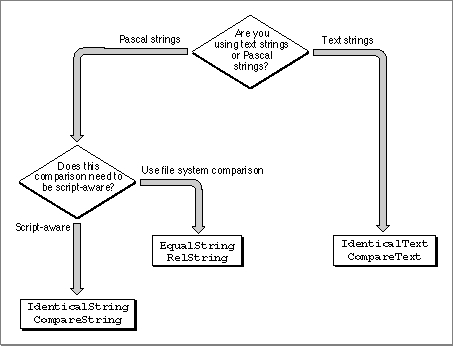

Sorting Strings in the Same Language
The Text Utilities provide a number of routines that you can use to compare and sort strings in the same language. Some of these routines perform a comparison that assumes single-byte character codes in the strings; others take into account the sorting rules of the current script system, and still others allow you to explicitly specify the script system resource to use for sorting strings.Comparing strings can be an extremely intricate operation, because in many languages you may have to account for subtleties such as complex characters, ignorable characters, and exceptional words. Even for a straightforward language such as English, you can't always determine the sorting order by a simple table lookup or character value comparison.
This section provides an introduction to some of the principles of text comparison and sorting used by the Macintosh script management system. It then describes the routines you can use for different comparison tasks.
Primary and Secondary Sorting Order
Sorting consists of two steps: determining primary sorting order and determining secondary sorting order.What happens in primary sorting order and secondary sorting order depends on the language of the strings that are being sorted; however, there are two levels of importance in the sorting operation, with some sorting differences subordinate to others. In the primary sorting order for many Roman script system languages, uppercase and lowercase characters are equivalent and diacritical marks are ignored. Thus, after primary sorting, the two strings "The" and "thé" are considered equivalent. In the secondary sorting order, lowercase characters are ranked after uppercase characters and characters with diacritical marks are ranked individually. Thus, after secondary sorting, "The" would sort before "thé".
You can think of the character ranking that is used to determine sorting order as a two-dimensional table. Each row of the table is a class of all characters such as all A's: uppercase and lowercase, with and without diacritical marks. The characters are ordered within each row to form a secondary sorting order, while the order within each column determines primary sorting order. Table 5-1 shows an example of such a table.
In primary sorting, each of the characters in the first row would be considered equivalent and sorted before characters in the second row. In secondary sorting, the order of the characters in each row would be taken into consideration. Another way of saying this is to say that primary sorting characteristics take precedence over secondary sorting characteristics: if any primary differences are present, all secondary differences are ignored. When the strings being compared are of different lengths, each character in the longer string that does not correspond to a character in the shorter one results in a "comes after" result. This takes precedence over secondary sorting order.
For example, here is a list of strings that have not yet been sorted:
Å ab Ác ac Ab àb Ac
After primary sorting, the list appears as follows
Å ab Ab àb Ác ac Ac
After secondary sorting, the list appears as follows
Expansion and Contraction of Characters
In some languages, a single character may be expanded--that is, sorted as a sequence of characters. First, the sorting routine expands the character, then it performs sorting on the expanded version. Next, the sorting routine recombines the character and then performs secondary sorting. For instance, the ä in German may be sorted as if it were the two characters ae: Bäcker would come after Bad, but before Bahn.A sequence of characters may also be contracted--that is, sorted as a single character. For instance, ch in Spanish may be sorted as if it were one character that sorts after c but before d: coche comes after coco but before codo.
Ignorable Characters
Certain characters need to be ignored unless the strings are otherwise equal; that is, these characters have no effect on the primary sorting order, but they do influence the secondary sorting order. In English, hyphens, apostrophes, and spaces are ignorable characters. For instance, the hyphen is ignored in primary sorting order in English: black-bird would come after blackbird, but before blackbirds.Converting and Stripping Characters
Sometimes you may want to strip out certain characters (notably diacritical marks) or convert the case of characters in a string to produce a different comparison result. For example, you may want to convert all alphabetic characters in two strings into uppercase before comparing the strings, rendering uppercase and lowercase characters equivalent. The Text Utilities provide a number of routines for converting the case of characters and for stripping diacritical marks. These routines are described in the section "Modifying Text," which begins on page 5-18.Special Cases for Sorting
Sometimes the sorting order changes drastically for special cases. For instance, when words are understood to be abbreviations, the strings should be sorted as if they were spelled out in full, as in the following examples.
First string Second string Explanation McDonald Mary McDonald is treated as MacDonald St. James Smith St. is an abbreviation for Saint Easy Step Easy St. St. is an abbreviation for Street Cases such as these require a direct dictionary lookup and are not handled automatically by the Macintosh script management system. Note that some abbreviations are context-dependent, such as St., which may denote Saint or Street, depending on the meaning of the adjacent text.
Variations in Sorting Behavior
Here are some examples of variations in sorting behavior in different writing systems of the world.
- Sorting in Japanese depends upon the subscript. Kana and Romaji sorting are complicated by the presence of both 1- and 2-byte character codes. Moreover, many Katakana symbols have diacritical marks indicating a sound modification. For example, the symbol for ga is formed from the symbol for ka. The secondary sorting order for ga includes the four combinations of 1-byte or 2-byte ka with the 1-byte or 2-byte diacritical mark, plus a 2-byte character that combines the character and diacritical into a single glyph.
In the Japanese script system, Kanji is currently sorted by character code, which can produce unexpected results. Proper sorting in Kanji is commonly done using one of three methods:
- First by a character's primary radical, then by the number of remaining strokes.
- First by the number of total strokes, then by the primary radical.
- By sound value.
- Sorting in Arabic is quite straightforward except that some characters are ignorable, such as vowels and the extension bar (used to lengthen the cursive connection between characters). Vowels in Arabic are also diacritical marks, overlapping over or under the previous character (the character to the right).
- The Thai script system currently provides for third-level sorting involving character clusters. For more on character clusters, see the chapter "Introduction to Text on the Macintosh" in this book.
- Note
- If you need to modify a script system's standard string comparison or replace it with your own version, you have to create your own string-manipulation (
'itl2') resource by following the guidelines described in the appendix "International Resources" in this book.Choosing a Comparison Routine
The Text Utilities include six different routines for comparing one string to another. Three of these routines test two strings for equality and the other three determine the ordering relationship between two strings. You can use these routines with Pascal strings and text strings, and they allow you to work with information from various resources or to ignore script and language information altogether.Figure 5-6 provides you with convenient guidelines for choosing from among the comparison routines included in the Text Utilities. You first decide whether you are comparing two Pascal strings or two text strings, and then decide whether to unconditionally use the Macintosh file system string comparison rules or to explicitly specify a string-manipulation resource that defines such rules. If you use a routine that requires a parameter for a string-manipulation resource handle, you can specify
NILfor the value of that parameter to indicate that you want the current script system's string-manipulation resource.The top routine names in the boxes in Figure 5-6 are used to test two strings for equality, and the bottom routine names in the boxes are used to compare two strings and determine their sorting order. The term script-aware is used in this figure to indicate that you must explicitly specify a string-manipulation resource as a parameter to a routine, rather than the routine automatically using the file system's string-manipulation rules.
Figure 5-6 Choosing a string comparison routine

The Macintosh file system string comparison rules are a subset of the Roman script system comparison rules. These rules are used when the Macintosh file system compares filenames for sorting. Since the Macintosh character set only contains characters with codes from $0 to $D8, the file system comparison rules only work correctly for character codes through $D8. You should only use the routines that use these rules when you are trying to emulate the way that the Macintosh file system compares strings. Table 5-2 describes the sorting behavior implemented by the routines that use the file system comparison rules.
Table 5-2 Sorting features of the Macintosh file system Reordering of ligatures Stripping of diacritical marks Uppercase conversion Ligature Falls between Marked character Stripped to Lower Upper --> Å and a Ä, Å, À, Ã A a-z A-Z[1] æ å and B Ç C à À � Ø and o É E ã Ã � ø and P Ñ N ä Ä ß s and T Ö, Õ, Ø O å Å Ü U æ --> á, à, â, ä, ã, å, � a ç Ç ç c é É é, è, ê, ë e ñ Ñ í, ì, î, ï i ö Ö ñ n õ Õ ó, ò, ô, ö, õ, ø, � o ø Ø ú, ù, û, ü u � � ÿ y ü Ü Testing Two Strings for Equality
To test whether two strings are equal, useEqualString,IdenticalString, orIdenticalText. You can use the first two functions with Pascal strings, and the last one with text strings.The functions that work with Pascal strings--
EqualStringandIdenticalString--allow you to specify the kind of information you want to consider in your test. If you want to test two Pascal strings using the Macintosh file system comparison rules, useEqualString. If you want to consider the information from a string-manipulation resource, use theIdenticalStringfunction. You can explicitly specify the handle of a string-manipulation resource or you can specifyNILas the value to indicate that you want the current script's string-manipulation resource used.To test two text strings for equality, you use the
IdenticalTextfunction, which makes use of the information in a string-manipulation resource. You can explicitly specify the handle of a string-manipulation resource or you can specifyNILas the value to indicate that you want the current script's string-manipulation resource used.Comparing Two Strings for Ordering
There are also three Text Utilities routines that compare two strings and return a value that indicates whether the first string is less than, equal to, or greater than the second string. Two of these routines take Pascal string parameters and the other takes text string parameters.To compare one Pascal string to another, you have to choose either the
RelStringfunction or theCompareStringfunction. If you want to compare two Pascal strings using the Macintosh file system comparison rules, useRelString. If you want to consider the information from a string-manipulation resource, use theCompareStringfunction. You can explicitly specify the handle of a string-manipulation resource or you can specifyNILas the value to indicate that you want the current script's string-manipulation resource used.To compare one text string to another, you use the
CompareTextfunction, which makes use of the information in a string-manipulation resource. You can explicitly specify the handle of a string-manipulation resource or you can specifyNILas the value to indicate that you want the current script's string-manipulation resource used.
[1] All simple lowercase Roman characters are converted to their uppercase equivalents.